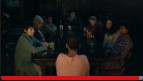
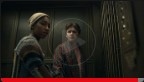
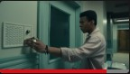
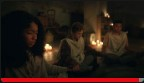

Las 10 más populares en España hoy
Documentales
Series TV premiadas
Documentales
Series TV premiadas

Las 10 más populares en España hoy
Documentales
Series TV premiadas
Documentales
Series TV premiadas
95 % de coincidencia
2022

2 temporadas
DV
AD
"Medianoche"
A la mañana siguiente, la Dra.Shanton regaña a Ilonka y revela más
detalles sobre Julia Jayne. Sandra se despide. Kevin termina de contar
su historia
EpisodiosTemporada 1
Reparto: Iman Benson, Igby Rigney,
Ruth Codd, más
Géneros: Misterios TV,Series TV
basadas en libros,Series TV juveniles
Pertenece a: Sombría, Íntima, De
suspense
1
Episodio 150 min
Cuando el cáncer pulveriza sus planes universitarios, la joven Ilonka encuentra un
rayo de esperanza en Brightcliffe, un misterioso centro para enfermos terminales.
2
Episodio 258 min
Cuando el cáncer pulveriza sus planes universitarios, la joven Ilonka encuentra un
rayo de esperanza en Brightcliffe, un misterioso centro para enfermos terminales.
3
Episodio 359 min
Cuando el cáncer pulveriza sus planes universitarios, la joven Ilonka encuentra un
rayo de esperanza en Brightcliffe, un misterioso centro para enfermos terminales.
4
Episodio 451 min
Cuando el cáncer pulveriza sus planes universitarios, la joven Ilonka encuentra un
rayo de esperanza en Brightcliffe, un misterioso centro para enfermos terminales.
5
Episodio 555 min
Cuando el cáncer pulveriza sus planes universitarios, la joven Ilonka encuentra un
rayo de esperanza en Brightcliffe, un misterioso centro para enfermos terminales.
6
Episodio 653 min
Cuando el cáncer pulveriza sus planes universitarios, la joven Ilonka encuentra un
rayo de esperanza en Brightcliffe, un misterioso centro para enfermos terminales.